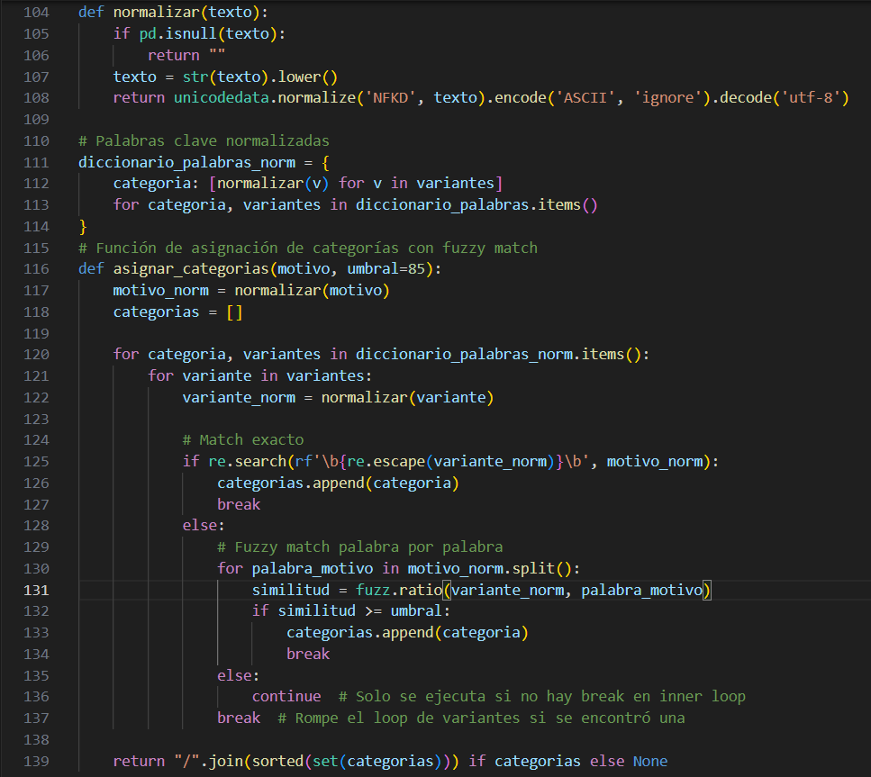
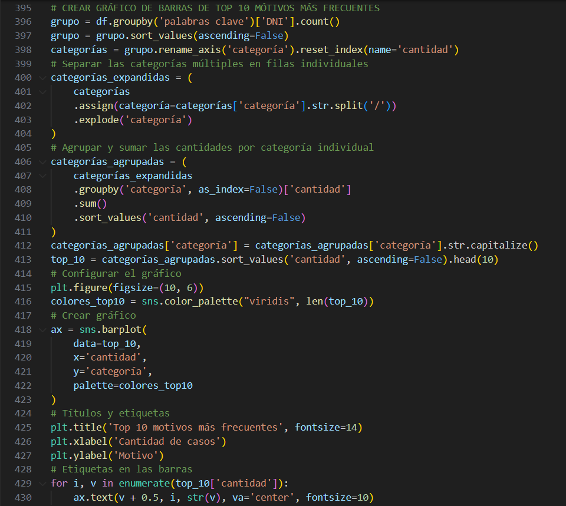
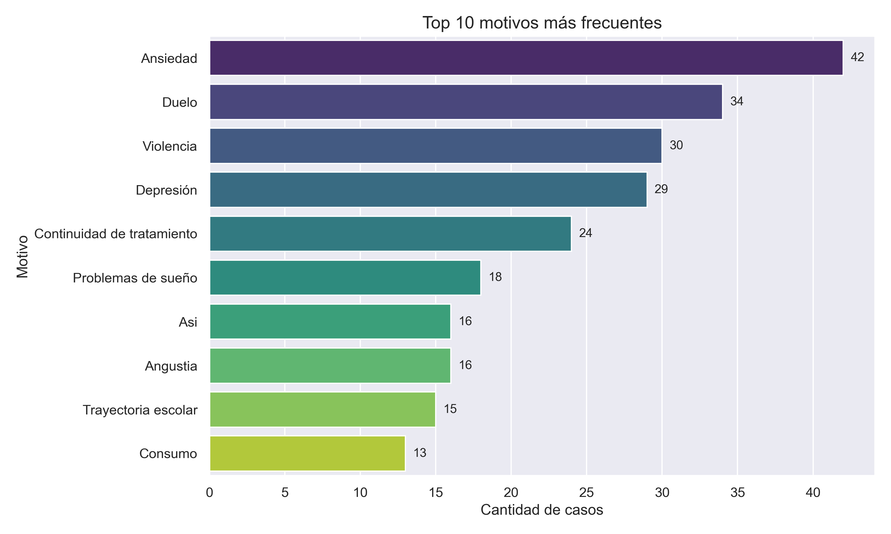
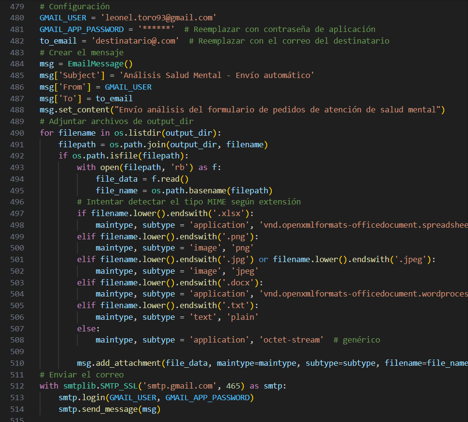

Desarrollo del proyecto

El proyecto parte del análisis de datos recolectados mediante un formulario online que debe completar el profesional que solicita la derivación a salud mental. En muchos casos, estos formularios se llenan rápidamente y bajo alta carga de trabajo, lo que genera respuestas desordenadas, con errores ortográficos o lenguaje informal. Una de las columnas clave incluía texto libre que describía el motivo del pedido, con grandes variaciones en redacción, longitud y vocabulario. Para estructurar esta variable, desarrollé un módulo que normaliza el texto y lo compara contra un diccionario de categorías predefinidas, aplicando técnicas de fuzzy matching con la librería RapidFuzz. Esta etapa permitió etiquetar automáticamente cada registro con uno o más motivos estandarizados, dando estructura a lo que originalmente era información desordenada. La imagen ilustra un fragmento central de este proceso, donde se combinan expresiones regulares, normalización de caracteres y comparación difusa para maximizar la cobertura sin perder precisión.

Una vez estructuradas las categorías a partir del texto libre, se avanzó con un análisis exploratorio amplio de los datos. Se generaron diversas visualizaciones que permitieron entender mejor el volumen, las características y los contextos de las derivaciones. Entre ellas, se destacan gráficos de cantidad de pedidos por rango etario —obtenido a partir de la limpieza y binning de la variable edad—, evolución mensual y semanal de las derivaciones, y porcentaje de pacientes con tratamiento previo en salud mental. Estas visualizaciones aportan múltiples perspectivas que enriquecen el diagnóstico institucional. Dentro de este proceso, también se desarrolló el código que genera el gráfico de motivos más frecuentes, a partir del conteo y expansión de las etiquetas categorizadas en el paso anterior. En este bloque se muestra parte del código utilizado para calcular, ordenar y preparar estos indicadores, que fueron claves para transformar texto libre en información visualmente útil.

Además de las visualizaciones, el proyecto incluyó el cálculo de métricas operativas relevantes para evaluar el funcionamiento del sistema de derivaciones. Entre ellas, se calcularon el promedio de consultas semanales, la cantidad total de registros procesados, el porcentaje de formularios que no lograron ser categorizados mediante palabras clave, y la cantidad promedio de categorías detectadas por caso. Estas métricas permiten monitorear la evolución de la demanda, detectar posibles problemas en el diseño del formulario o en el llenado, y ajustar estrategias de atención. La visualización mostrada en este bloque, centrada en los motivos más frecuentes de derivación, sintetiza parte de ese trabajo y sirve como ejemplo del tipo de resultados que el análisis permite obtener. Es la instancia donde los datos procesados se transforman en evidencia clara para orientar decisiones clínicas e institucionales.

Como cierre del pipeline, se desarrolló un módulo que automatiza la generación y el envío del informe. Todos los productos del análisis —gráficos, tablas y un informe en PDF generado automáticamente— se recopilan y se envían por correo electrónico al equipo correspondiente. Se utilizaron las bibliotecas smtplib y email para componer el mensaje, detectar los archivos a adjuntar y despachar el correo desde una cuenta predefinida. Esta etapa le da al proyecto un carácter operativo y escalable: no solo procesa e interpreta datos, sino que también entrega resultados de forma autónoma, sin necesidad de intervención manual. La imagen muestra un fragmento de este flujo de automatización, que es especialmente útil en entornos institucionales con alta carga de trabajo, donde el tiempo disponible para sistematizar y compartir resultados es escaso.